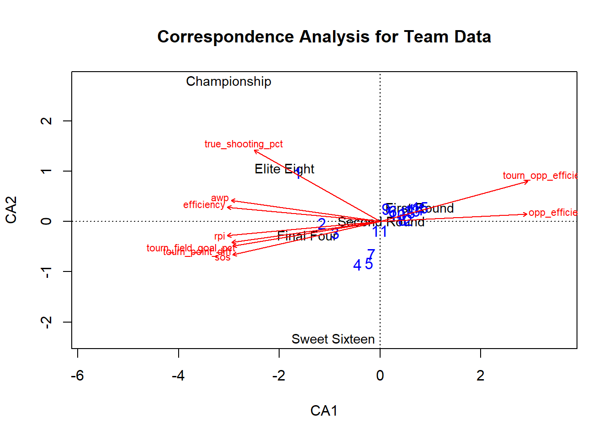
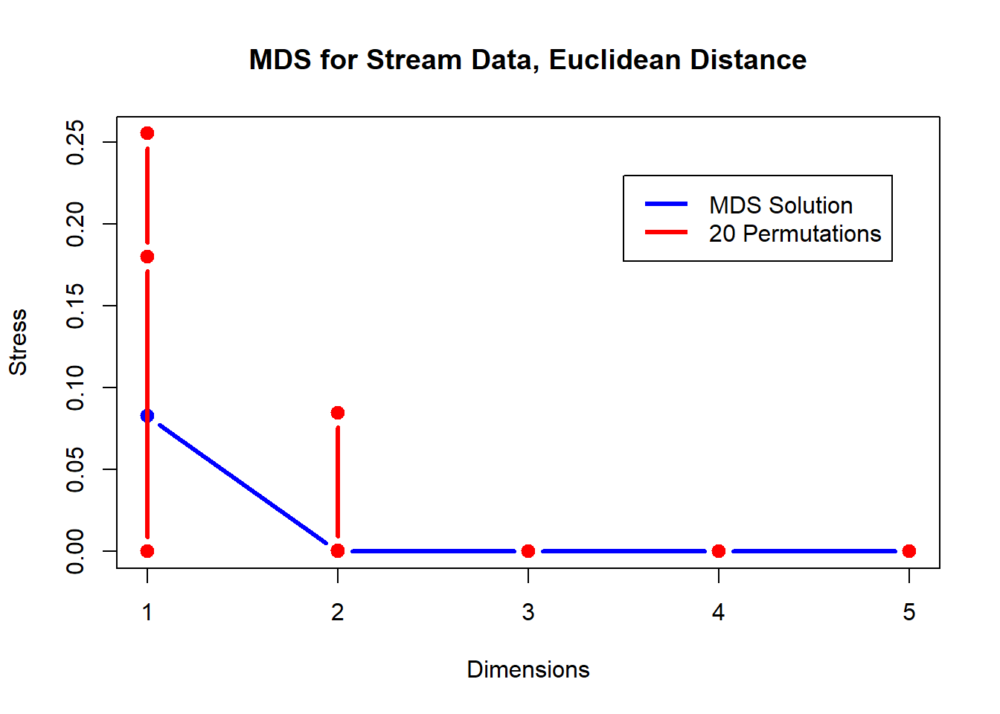
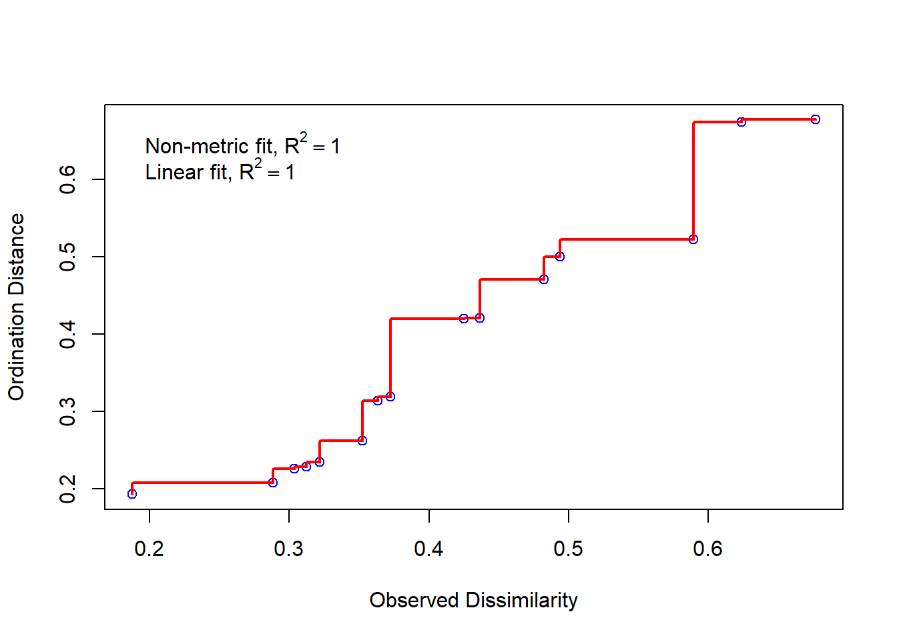
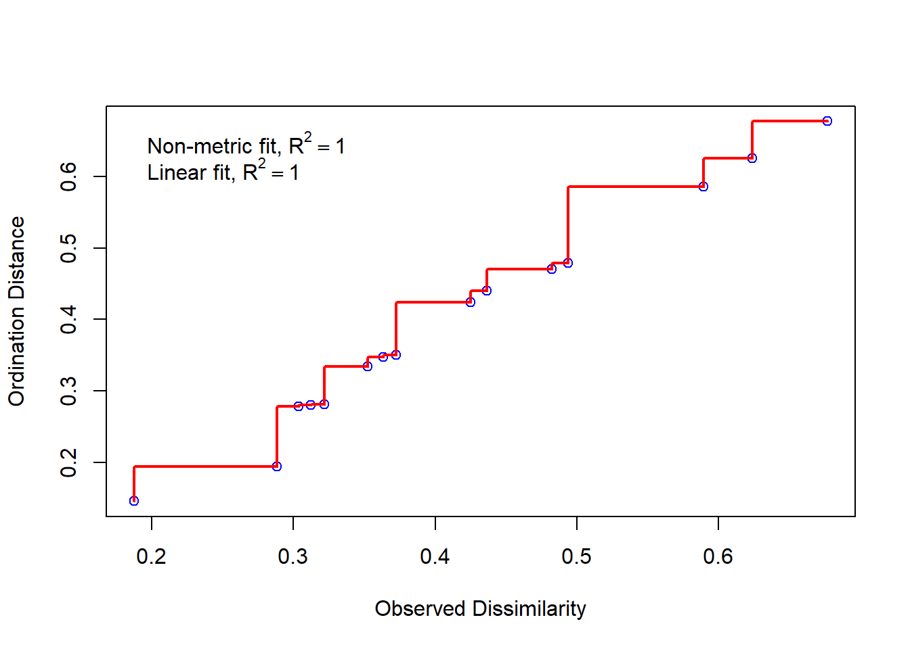
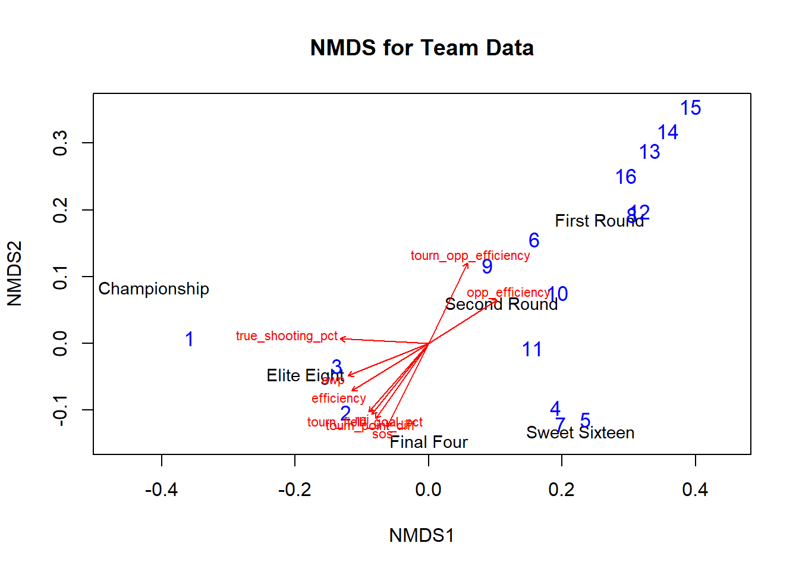
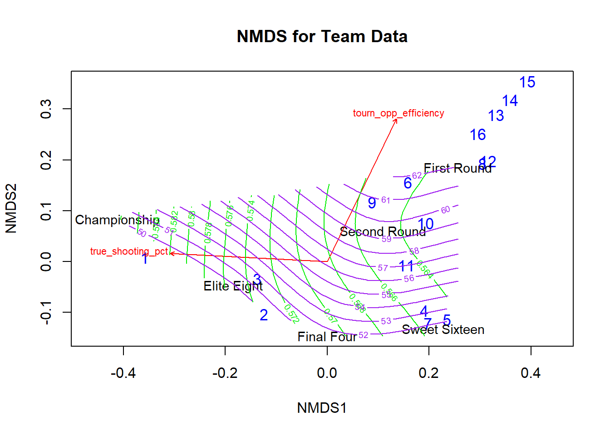
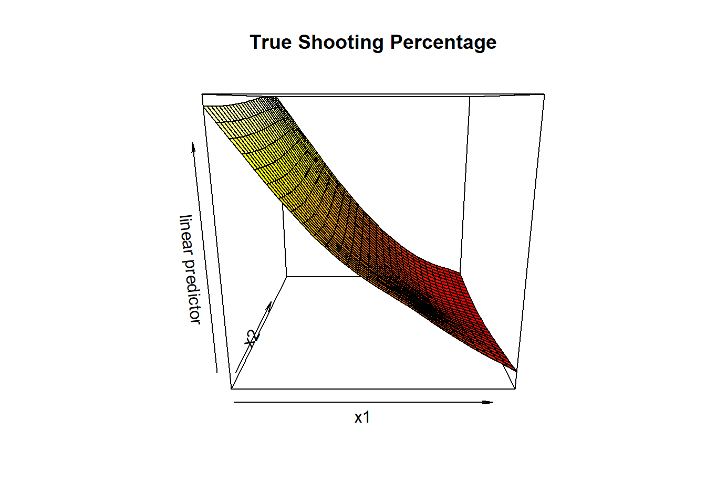
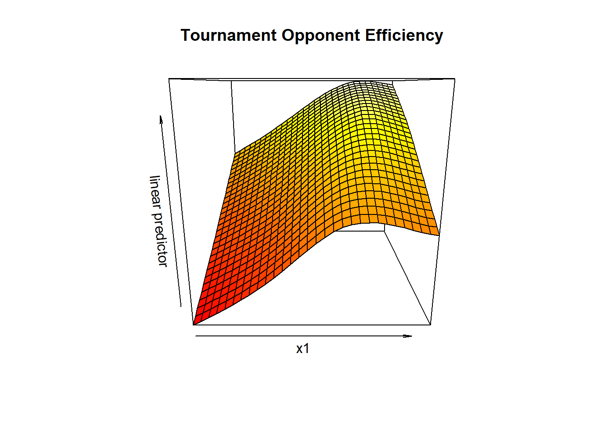
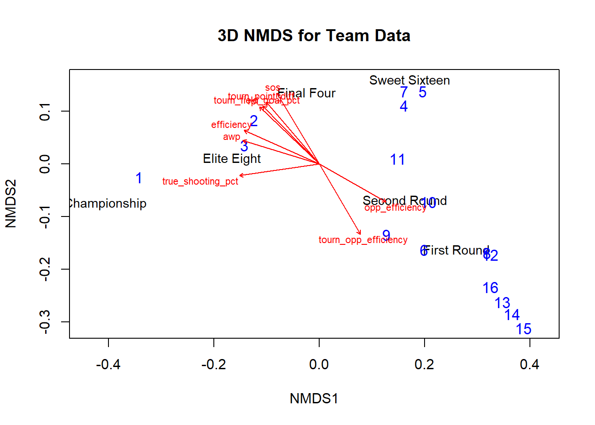
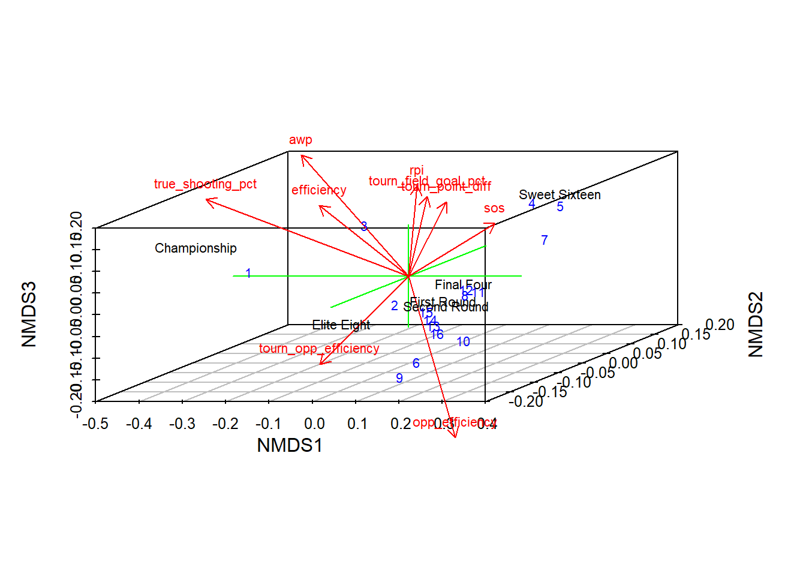

Now, instead of focusing on the relationships between our variables, we will group the teams according to seed and furthest tournament round reached. Then, we will use ordination to produce low-dimensional (2 and 3 dimensions) visualizations of how these groups relate to each other. Finally, we will overlay linear vectors and contour lines for our continuous team statistics. This allows us to interpret what the directions of these plots may mean.
First, we will fit correspondence analysis to our data, grouping by tournament seed as our “species” and furthest tournament round reached as our “sites.” By doing so, we are able to create two-dimensional plots representing the relationships between these groups, as well as their potential interactions with continuous team performance statistics.
To start, we complete the correspondence analysis itself using the cca function of R. We see that the first two axes account for about \(83.9\%\) of the inertia, with about \(58.7\%\) along the first correspondence analysis axis and about \(25.2\%\) along the second correspondence analysis axis. Thus, the two dimensions we plot below account for large percentage of the total inertia and hence are quite representative of the data as a whole.
##
## Call:
## cca(X = TD.count)
##
## Partitioning of scaled Chi-square:
## Inertia Proportion
## Total 0.785 1
## Unconstrained 0.785 1
##
## Eigenvalues, and their contribution to the scaled Chi-square
##
## Importance of components:
## CA1 CA2 CA3 CA4 CA5
## Eigenvalue 0.461 0.198 0.0738 0.0312 0.0213
## Proportion Explained 0.587 0.252 0.0940 0.0398 0.0271
## Cumulative Proportion 0.587 0.839 0.9331 0.9729 1.0000
##
## Scaling 2 for species and site scores
## * Species are scaled proportional to eigenvalues
## * Sites are unscaled: weighted dispersion equal on all dimensions
##
##
## Species scores
##
## CA1 CA2 CA3 CA4 CA5
## 1 -1.62873 0.9751 -0.2464 0.019507 -0.08789
## 2 -1.15354 -0.0377 0.2467 -0.179121 0.39791
## 3 -0.88743 -0.2283 -0.1162 0.084524 -0.27199
## 4 -0.44180 -0.8523 -0.0323 0.407928 0.05018
## 5 -0.22010 -0.8253 -0.1190 -0.133536 -0.12491
## 6 0.25358 0.2052 0.4931 0.066842 -0.05417
## 7 -0.17084 -0.6524 -0.1943 -0.399635 -0.01022
## 8 0.44271 0.0331 0.0812 0.040213 -0.11372
## 9 0.11957 0.2573 0.4967 0.142764 0.11057
## 10 0.33391 0.1360 0.2870 -0.326486 -0.09661
## 11 -0.00494 -0.1808 0.0364 0.011272 0.12879
## 12 0.47058 0.0345 -0.0171 0.048554 -0.07705
## 13 0.62795 0.2229 -0.1289 0.017697 0.00155
## 14 0.70392 0.2494 -0.3412 0.030618 0.08534
## 15 0.78883 0.2790 -0.5784 0.045059 0.17900
## 16 0.52303 0.1863 0.1642 -0.000148 -0.11418
##
##
## Site scores (weighted averages of species scores)
##
## CA1 CA2 CA3 CA4 CA5
## sit1 -3.0017 2.7727 -2.063 0.3501 -3.435
## sit2 -1.8906 1.0384 0.550 1.2816 2.582
## sit3 -1.4498 -0.2675 -0.406 -4.7483 1.102
## sit4 0.7888 0.2790 -0.578 0.0451 0.179
## sit5 0.0246 0.0124 1.556 -0.0849 -0.664
## sit6 -0.9281 -2.3230 -0.699 0.6174 -0.290Now, plotting our results in two dimensions, we see a strong cluster in the center, encompassing the First Round and Second Round groups, along with the majority of the seed groups. In fact, seed groups 6, 8-10, and 12-16 are so bunched together they are indiscriminant. This implies that these seeds are normally eliminated in the first two rounds. Unfortunately, it also means that correspondence analysis does not provide much insight into differentiating these seeds and their success. For these teams, the tournament really does seem to live up to its random reputation.
We see the higher seeds slightly farther from this central group, with the 1 seeds close to the Elite Eight grouping and the 2 and 3 seeds near the Final Four grouping. Interestingly, the Final Four group seems to be closer to the central low-performance cluster of seeds and rounds than the Elite Eight group, which is closer to the Championship group. This may be due to the consistency with which 1 seeds reach the Elite Eight due to their easier bracket draws; however, while they may be more likely to reach the Elite Eight, this implies that they are also relatively likely to lose in that round. Nevertheless, they are fittingly closest to the Championship group, implying the highest probability of championship-level success. Meanwhile, the 2 and 3 seed groups’ proximity to the Final Four implies that they are likely to reach this round but not as likely to reach the championship.
While the previously-discussed seeds fall into expected patterns, the most interesting outliers are probably the 4, 5, 7, and 11 seeds, namely the latter. The 4 and 5 seeds are the closest to the Sweet Sixteen group, which in itself seems to be a bit of an outlier (with a very negative CA2 value). This follows in the general gradient of the higher seeds, but it is interesting that they are a clear step down from the top seeds while maintaining a clear advantage over the low seeds. The 7 and 11 seeds are definitely the most interesting, as they would be expected to be in the mediocre central cluster. However, they instead seem to be good choices for potential Cinderella teams. In fact, the location of these groups are probably caused by such teams (like the 2014-15 7 seed/Final Four Michigan State team). Overall, there is a clear correlation between seed and round reached, with higher seeds reaching further rounds and these outliers demonstrating some unexpected trends across tournaments.
Looking at the shape of the correspondence analysis plot, there definitely seems to be some multivariate “snaking” of the groups, namely some sort of clockwise curve outwards from the central cluster. The seed groups follow a relatively tight spiral, with higher-seeded teams further to the outside of the curve. On the other hand, the tournament round groups follow a much sharper pattern, with an absolute value-like orientation (with the minimum/turning point at the Sweet Sixteen). This demonstrates a greater difference between tournament rounds than between seeds, which tend to be a bit more random.
To increase our interpretation of these trends, we will also overlay several continuous variables onto our plot as vectors in “inertia space.” We chose the most impactful variables (using the results of previous PCA, Discriminant Analysis, etc.) across several different categories, namely regular season offense (efficiency and true shooting percentage), regular season defense (opponent efficiency), regular season composite statistics (RPI, adjusted winning percentage, and strength of schedule), tournament offense (field goal percentage), tournament defense (opponent efficiency), and overall tournament success (average point differential).
This technique is quite effective, with all of the chosen variables significant at a significance level of 0.05 (and efficiency significant even at a significance level of 0.01). In terms of trends, we see that true shooting percentage, adjusted winning percentage, and efficiency trend most directly towards Championship success.
Interestingly, tournament field goal percentage and tournament point differential trend slightly more towards the Final Four and 2/3 seed portion of the plot, demonstrating the generally equal levels of performance in the final few stages of the tournament. RPI and strength of schedule point in a similar direction, implying a strong correlation between these variables and tournament success. Finally, we see opponent efficiency (both regular season and tournament) point directly against these variables, demonstrating that good defense tends to predict tournament success.
However, in a game dominated by scoring and shooting, offensive efficiency and true shooting percentage seem to be the best path to success. In fact, they are even more correlated with the most successful groups than tournament statistics themselves. Perhaps this means offense is the best differentiator in the closely-matched final rounds. Overall, with the low p-values and clear trends, these continuous statistics are clearly pertinent predictors of group trends.

##
## ***VECTORS
##
## CA1 CA2 r2 Pr(>r)
## efficiency -0.996 0.094 0.98 0.0056 **
## true_shooting_pct -0.870 0.493 0.87 0.0472 *
## opp_efficiency 0.999 0.050 0.90 0.0444 *
## rpi -0.996 -0.092 0.98 0.0181 *
## awp -0.990 0.141 0.94 0.0167 *
## sos -0.975 -0.221 0.95 0.0417 *
## tourn_field_goal_pct -0.990 -0.141 0.93 0.0375 *
## tourn_opp_efficiency 0.965 0.263 0.97 0.0222 *
## tourn_point_diff -0.986 -0.164 0.93 0.0333 *
## ---
## Signif. codes: 0 '***' 0.001 '**' 0.01 '*' 0.05 '.' 0.1 ' ' 1
## Permutation: free
## Number of permutations: 719Next, we will perform non-metric multidimensional scaling on our data, again grouping by tournament seed as our “species” and furthest tournament round reached as our “sites.” By doing so, we are able to create two and three-dimensional plots representing the relationships between these groups, as well as their potential interactions with continuous team performance statistics.
To address all reasonable possibilities of multidimensional scaling, we will consider representing our groups in both 2 and 3 dimensions. In each case, we use Euclidean distance due to the clarity of results and similar reasoning as in our previous cluster analysis.
To differentiate between these solutions, we will consider the stress related to each. We will create \(20\) permutations of our data and analyze the difference in stress reduction compared to these randomized permutations. Also, we will use a scree plot to see what number of dimensions is an apt “cut-off” where the amount of stress flattens out. Finally, we will take a look at stress plots for each of the dimensions to analyze their individual validity.
Starting with the scree plot, we see that the stress is approximately 0 for any dimensions greater than or equal to 2. However, we only see a significant advantage compared to our permutations at 2 dimensions and below. Thus, 2 would seem to be the most natural number of dimensions to choose. On the other hand, due to the negligible/non-existent stress reduction of the 3-dimensional solution, it does not seem very worthwhile. The general linearity of all three solutions is verified by the stress plots, with perfect fits on the 2 and 3-dimensional solutions. This implies that multidimensional scaling will be quite succesful at grouping and plotting our data.

## Stress Plot for Two Dimensions
## Stress Plot for Three Dimensions
Starting with the two-dimensional NMDS solution, we see a plot that looks quite different to the result from correspondence analysis. However, closer investigation shows a similar relationship between seeds and tournament round groups. The major difference lies in the proximity of the 2 and 3 seeds to the Elite Eight group rather than the Final Four group. As a result, they appear slightly closer to the 1 seeds and the Championship group. Otherwise, we see approximately the same grouping of seeds as from correspondence analysis. We again see some “snaking” effect, but this time it seems a bit parabolic, with the Final Four and Sweet Sixteen acting as the vertex. However, unlike the correspondence analysis plots, this one can be viewed in a relatively linear manner, especially excluding the Championship group.
In the same vein as in correspondence analysis, we will now overlay continuous team statistics onto our multidimensional scaling plots. In terms of significance, we see low p-values for almost all the variables, with only opponent efficiency and adjusted winning percentage not being overly signficant. Visually, we see similar patterns to correspondence analysis, but the data is generally more linear.. Therefore, the two sets of statistics (team and opponent) are more diametrically opposed, rather than the division into quadrants from before. The opponent statistics point quite clearly to the First and Second Round groups, along with the high seeds, while the team statistics all point towards the Elite Eight, Final Four, and Championship groups. The Sweet Sixteen is the odd group out, being positioned at an almost perpendicular angle to the variable vectors.

##
## ***VECTORS
##
## NMDS1 NMDS2 r2 Pr(>r)
## efficiency -0.851 -0.525 0.94 0.0222 *
## true_shooting_pct -0.999 0.052 0.89 0.0444 *
## opp_efficiency 0.845 0.535 0.76 0.1319
## rpi -0.657 -0.753 0.95 0.0194 *
## awp -0.928 -0.371 0.86 0.0542 .
## sos -0.448 -0.894 0.99 0.0069 **
## tourn_field_goal_pct -0.628 -0.779 0.95 0.0125 *
## tourn_opp_efficiency 0.435 0.900 0.91 0.0208 *
## tourn_point_diff -0.579 -0.815 0.96 0.0167 *
## ---
## Signif. codes: 0 '***' 0.001 '**' 0.01 '*' 0.05 '.' 0.1 ' ' 1
## Permutation: free
## Number of permutations: 719While the linear relationships appear to capture high correlations, we will also consider non-linear overlays of our continuous variables. After trying them all, the most informative contour plots are for true shooting percentage (outlined in green) and tournament opponent efficiency (outlined in purple). We see true shooting percentage curve along the second axis, “connecting” the first three round groups and high seeds. This implies that high seed, early round teams play shoot similarly mediocrely. The curvature flattens out near the Championship and Elite Eight groups, implying greater differences in these later rounds. On the other hand, tournament opponent efficiency is at a more or less perpendicular angle to the the true shooting percentage contours, with curvature connecting the Championship, Elite Eight, Final Four, and Sweet Sixteen groups. Meanwhile, there is greater differentiation among the earlier rounds and high seeds. This implies that tournament defense is relatively level across the higher performing groups but falls off steeply after that.
Notably, efficiency and regular season opponent efficiency contours were quite similar to our plotted true shooting percentage and tournament opponent efficiency contours, respectively, with slightly lower degrees of curvature. Thus, these variables would have similar interpretations, which is especially interesting with regards to opponent efficiency due to the implied predictive power of regular season defense. Ultimately, by overlaying these two groups of contours, we see a much more connected ordination plot, with less apparent randomness. As evidenced by the following three-dimensional visualizations, these variables do not have linear relationships in our plotted space, so contours are fittingly more informative than linear vectors.

Now, addressing the three-dimensional solution, we will first look at a two-dimensional plot for easy comparison with the two-dimensional solution. It looks almost exactly the same as before, except it is flipped over a central horizontal axis. Thus, we now have an upside-down version of the aforementioned parabola effect.
Then, looking at the three-dimensional plot, we see a very similar result, with the Championship and Sweet Sixteen groups taking a much higher value along the third axis. However, while it still seems to have a somewhat parabolic trajectory, there is definitely some significant differences from any two-dimensional plane. As a result, we see more differentiation between the clusters of seeds. For example, while the 2 seeds remain close to the Elite Eight group, the 3 seeds now sit at an indistinct point in space above the Elite Eight on the same vertical plane as the Championship group. Meanwhile, previous groupings like the 4/5/7 seeds are strengthened, separated in multiple dimensions from other groupings.
Finally, we overlay our continuous variables onto our three-dimensional multidimensional scaling results. Interestingly, the tournament statistics are least significant here, implying randomness within tournament results but predictive ability from the regular season statistics. Meanwhile, the variables take many different directions, with offensive statistics pointing most directly to the Championship group. Meanwhile, tournament statistics seem to point more towards the Sweet Sixteen groups, demonstrating the aformentioned “statistical flattening” once a certain round of the tournament is reached. In this case, the Elite Eight actually seems to be the biggest outlier, with no vectors really pointing in its direction. This is probably just an aberration caused by its low value along the third axis, which is not as significant as the other two axes.

##
## ***VECTORS
##
## NMDS1 NMDS2 r2 Pr(>r)
## efficiency -0.913 0.408 0.98 0.0042 **
## true_shooting_pct -0.989 -0.145 0.94 0.0069 **
## opp_efficiency 0.869 -0.495 0.85 0.0556 .
## rpi -0.724 0.690 0.99 0.0028 **
## awp -0.956 0.292 0.92 0.0153 *
## sos -0.515 0.857 0.98 0.0056 **
## tourn_field_goal_pct -0.700 0.715 0.95 0.0181 *
## tourn_opp_efficiency 0.504 -0.864 0.95 0.0208 *
## tourn_point_diff -0.650 0.760 0.96 0.0167 *
## ---
## Signif. codes: 0 '***' 0.001 '**' 0.01 '*' 0.05 '.' 0.1 ' ' 1
## Permutation: free
## Number of permutations: 719## Warning in text.default(sco, labels = rownames(sco), ...): "display" is not a
## graphical parameter
##
## ***VECTORS
##
## NMDS1 NMDS2 NMDS3 r2 Pr(>r)
## efficiency -0.898 0.402 0.180 0.98 0.040 *
## true_shooting_pct -0.884 -0.129 0.448 0.97 0.028 *
## opp_efficiency 0.655 -0.373 -0.657 0.96 0.046 *
## rpi -0.715 0.682 0.154 0.99 0.017 *
## awp -0.826 0.252 0.504 0.97 0.031 *
## sos -0.512 0.852 -0.111 0.99 0.036 *
## tourn_field_goal_pct -0.696 0.711 0.095 0.95 0.068 .
## tourn_opp_efficiency 0.503 -0.862 -0.067 0.96 0.085 .
## tourn_point_diff -0.649 0.759 0.043 0.96 0.072 .
## ---
## Signif. codes: 0 '***' 0.001 '**' 0.01 '*' 0.05 '.' 0.1 ' ' 1
## Permutation: free
## Number of permutations: 719